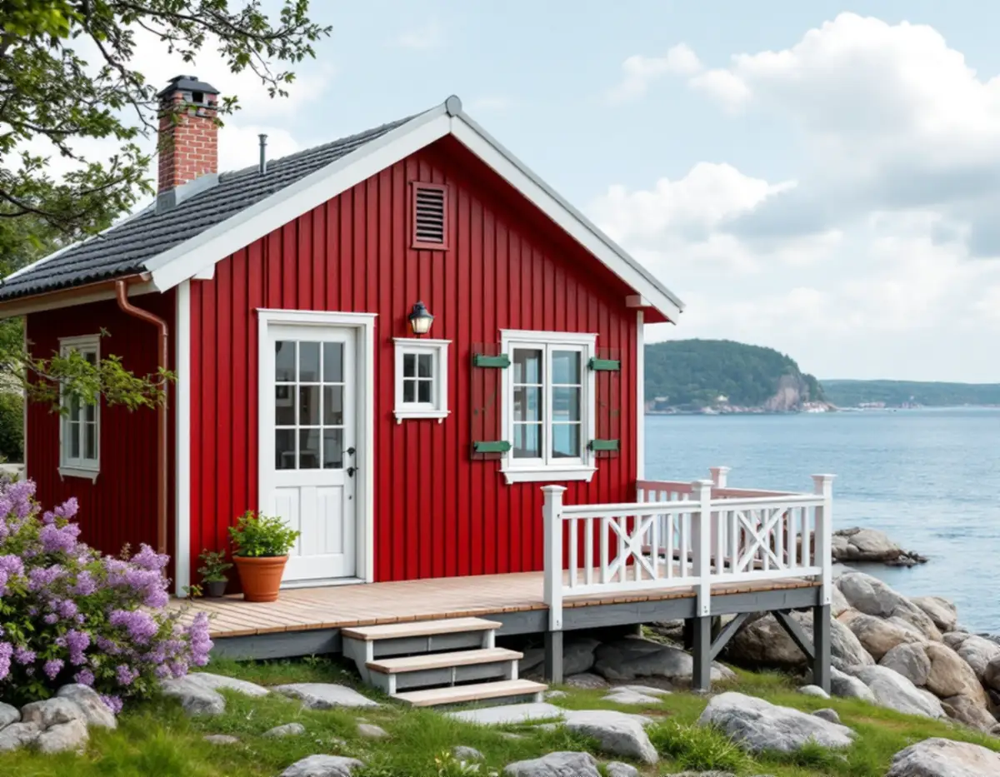
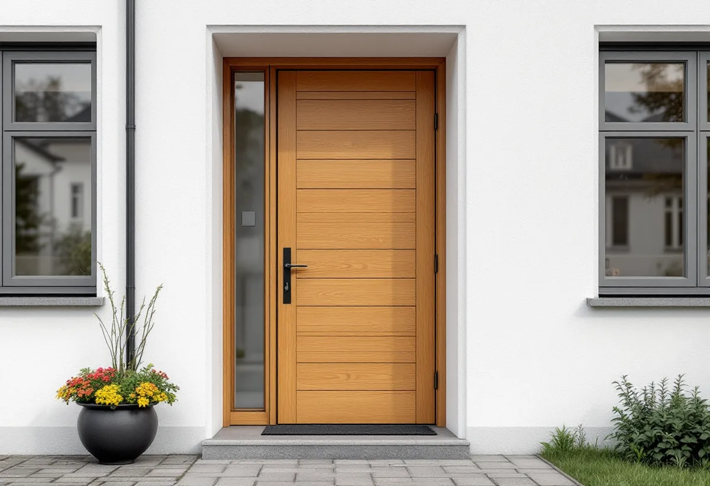

Husets historia
Vi tittar på byggår, eventuella inventeringar och vad kulturmiljöprogrammet säger om området.
På Lidingö är det ofta detaljerna som ska lagas: en glasveranda som en gång ersatte en förstukvist, en enkel trätrappa, en entrédörr i ekpanel eller en platsbyggd bokhylla i en äldre villa. Stadens kulturmiljöprogram från 2024 beskriver många av dem område för område. Vi lagar hellre än byter och planerar arbetet efter det programmet säger.

Grönstakolonin tillkom 1910 på initiativ av ingenjören Stig Milles och lär enligt kulturmiljöprogrammet vara Sveriges äldsta sportstugeområde. De första stugorna byggdes i plankkonstruktion på stenplintar, med faluröd liggande panel, vita snickerier och branta, papptäckta sadeltak. Redan på 1920-talet byggdes många ut och förlängdes, och ofta ersattes den öppna förstukvisten av en glasveranda.
Beskrivningen är full av detaljer som en snickare arbetar med: vita tätspröjsade fönster, gröna fönsterluckor och trädörrar, enkla utvändiga trätrappor och kryssmönstrade lister som sitter likt spaljéer mellan fasad och grund. Mot den smala gångvägen, bygatan, avgränsas lotterna med låga trästaket och en gärdesgård med små grindar. Nästan alla stugor är envåningshus, de flesta med faluröd fjällpanel.
Programmet råder att tillbyggnader undviks och att äldre byggnadsdetaljer som fönster, dörrar och farstukvistar i originalutförande ska värnas. Området är dessutom riksintresse för kulturmiljövården. En sliten veranda lagas därför med samma spröjsindelning, och en trappa byggs om i samma enkla form.

De trettio radhusen på Ekorrvägen nedanför Näset ritades av arkitekten Ernst Grönwall 1962. De ligger i fem grupper om sex hus, i souterräng med en våning mot gatan och två mot sluttningen. Ett garage i vinkel ger varje hus en skyddad liten uteplats, och entrén är indragen där garaget möter bostadsdelen.
Dörrar och garagedörrar är klädda med horisontell ekpanel, och mot sluttningen löper en loftliknande balkong längs fasaden. Kulturmiljöprogrammet noterar att några entrénischer har byggts in och att några dörrar och garageportar har bytts. De indragna nischerna med ekpanelade dörrar räknas som ett av områdets karaktärsdrag.
En ekpanelad dörr går ofta att renovera: skadade ribbor byts mot nya i samma dimension, dörren justeras i karmen och tätningen förnyas. Då behåller entrén sitt uttryck utan att nischen behöver byggas om.
I programmets handbok för fastighetsägare står att förvanskningsförbudet i 8 kap. 13 § plan- och bygglagen även kan tillämpas på interiörer, som kakelugnar, rumssamband, snickerier och annan fast inredning som är betydelsefull för byggnadens värde. Förbudet gäller förvanskning, inte förändring, och bara särskilt värdefulla byggnader och områden.
Innan inbyggda skåp, dörrar eller lister rivs i en äldre villa är det därför värt att ta reda på vad som finns om huset. Staden har byggnadsinventeringar från 1970- och 80-talet och från 2013–2015, och äldre bygglovshandlingar i arkivet. Lidingö hembygdsförening har ett stort fotoarkiv.
Handbokens råd är att begränsa ingreppen och bevara och reparera det som fungerar. Den påpekar också att så kallade underhållsfria material inte kan underhållas utan måste bytas när de har tjänat ut. För en trätrappa eller ett fönster betyder det att trasiga delar lagas med trä av samma slag och att resten får sitta kvar.
Utanför de värdefulla områdena kräver fasadändringar på en- och tvåbostadshus inte längre bygglov, tillbyggnader upp till 30 kvadratmeter är lovfria och komplementbyggnader delar på en pott om 45 kvadratmeter inom detaljplan. Inom särskilt kulturhistoriskt värdefulla områden gäller utökad lovplikt för de flesta åtgärder, och stadens webbkarta visar vilka fastigheter som berörs, skriver staden på sidan om ändrade regler för byggande.
Med de nya byggreglerna lägger staden vikt vid fackmässighet. I handlingarna ska det framgå vilken lösning eller metod som valts och vilket underlag, till exempel en standard eller handbok, som använts. En riskbedömning ska bifogas kontrollplanen, och nämnden kan begära komplettering. Byggherren ansvarar för att arbetet är fackmässigt, oavsett vem som utför det. I detaljplanerna anger q skydd av kulturvärden, k byggnadens karaktärsdrag och r rivningsförbud.
Är huset kulturhistoriskt särskilt värdefullt kan du enligt stadens frågor och svar söka byggnadsvårdsbidrag hos länsstyrelsen. Gäller arbetet en större tillbyggnad finns mer på sidan om byggföretag på Lidingö.
Vi tittar på byggår, eventuella inventeringar och vad kulturmiljöprogrammet säger om området.
Veranda, trappa, dörrar och fönster gås igenom del för del, så att det som håller får sitta kvar.
Skadade delar lagas, och det som inte går att rädda kopieras efter en bevarad förlaga.
Krävs lov tas ritningar och en kontrollplan med riskbedömning fram.
Arbetet görs etappvis och samordnas med målare när nytt trä ska grundas.
Vi går igenom arbetet med dig och beskriver vilka material och metoder som använts.
Skatteverket räknar flera av de vanligaste uppdragen här som rotarbete i småhus: att reparera entrétrappor som är ihopbyggda med huset, att byta och reparera dörrar och fönster och att bygga eller laga en altan eller balkong som sitter ihop med huset. Staket och nya fristående byggnader ger inget avdrag.
Avdraget är 30 procent av arbetskostnaden. Taket är 50 000 kr per person och år för rot och 75 000 kr för rot och rut tillsammans, och bara arbetet räknas, inte material eller resor. Reparation och underhåll ger avdrag oavsett hur gammalt huset är. Beloppet dras direkt på din faktura.
Mest betyder hur mycket av originalet som kan sparas, om dörrar, spröjs eller lister måste specialtillverkas och om arbetet kräver lov. En glasveranda med tätspröjsade bågar tar längre tid än en ny trätrappa i enkel form. Vi gör ett kostnadsfritt besök och lämnar sedan ett skriftligt kostnadsförslag.
Altan, väggar, dörrar och inredning.
Snickare i Stockholm →Takbyte, takbesiktning och plåtarbeten.
Takläggare i Lidingö →Brevik, Mölna och Käppala.
Takrenovering i Lidingö →Panel, puts och slamfärg.
Målare på Lidingö →Tillbyggnad och större projekt.
Byggföretag på Lidingö →Kök i villor och radhus.
Köksrenovering på Lidingö →Nya golv och slipning.
Golvläggare på Lidingö →Panel, puts och isolering.
Fasadrenovering på Lidingö →Villastäderna och Brevik på Lidingö.
Fönsterbyte på Lidingö →Plåt i vind och värdefulla miljöer.
Plåtslagare på Lidingö →